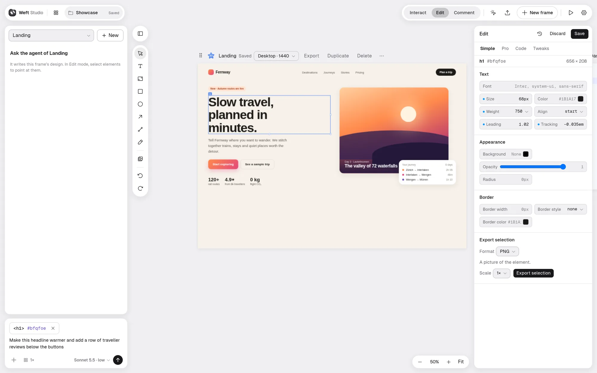
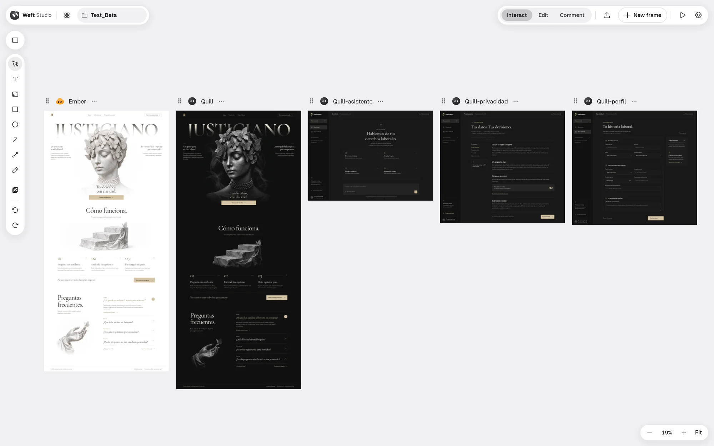

Diseña interfaces con tu agente de IA, en un lienzo en vivo.
Weft Studio es una herramienta de diseño de escritorio en la que tú y un agente de programación trabajáis en la misma pantalla. Describe lo que quieres, mira cómo el agente lo dibuja y después muévelo, cámbiale el estilo o reescríbelo a mano. Cada cambio queda en un archivo HTML legible.
Funciona con Claude Code, Codex, OpenCode y Antigravity, con las cuentas que ya tienes.
Beta. Linux x86_64 (AppImage, .deb) y Windows 11 x64. Se actualiza desde la propia app.

De una frase a código que puedes publicar
Cada diseño es un frame del lienzo con su propio agente y su propio historial.
- 1
Descríbelo
Pide una pantalla en el chat. Prueba una, dos o tres direcciones a la vez, cada una con su agente y su modelo.
- 2
Mira cómo aparece
El agente escribe el archivo del diseño y el lienzo se actualiza mientras escribe. Puede preguntarte antes de empezar.
- 3
Ajústalo a mano
Selecciona, arrastra y redimensiona. Cambia texto, color y espaciado en el inspector. Señala al agente los elementos que seleccionaste.
- 4
Pásalo a tu código
Tu agente de programación lee el diseño por un servidor MCP de solo lectura y lo construye en tu proyecto.
El diseño es un archivo que puedes leer
Sin formato cerrado. Un diseño es HTML con ids, variables y una pequeña clase de lógica, guardado como design.ws.html y versionado con Git.
- Los agentes lo escriben con las herramientas que ya usan.
- Lo exportado se abre en cualquier navegador, como HTML o como ZIP con sus assets.
- Importa los archivos
.dc.htmlde Claude Design.
<cw-if data-cw-id="00000a" test="{{ view === 'inicio' }}"> <section data-cw-id="00001c" class="hero"> <img data-cw-id="000036" src="./assets/statue-amparo-gray.png"> <h1 data-cw-id="000020">{{ headline }}</h1> </section> </cw-if> <!-- una vista de cuatro; el lienzo muestra un frame por cada una --> <script type="application/json" data-cw-props> { "view": { "type": "enum", "views": true, "options": ["inicio", "asistente", "privacidad", "perfil"] } } </script>
Todo en una sola ventana

- Apps de varias pantallas
- Un diseño puede declarar sus vistas, como inicio, precios y contacto, y el lienzo muestra un frame por cada una.
- Tus propios archivos
- Sube imágenes, GIF y vídeos a un diseño. El agente sabe que están y los usa.
- Versiones
- Cada turno válido del agente guarda una versión. Restaura o descarta desde el historial del frame.
- Comentarios y Present
- Ancla comentarios a elementos y presenta el diseño a pantalla completa, en vivo e interactivo.
- Exportar
- HTML legible con su runtime, un ZIP con los assets, o imágenes PNG y JPEG de un frame o de una selección.
- Proyectos
- Un inicio con portadas, renombrado y papelera, para que lo terminado no estorbe.
Descargar
Descarga la última beta desde la página de releases. Necesitas git y al menos un agente con su cuenta; la bienvenida detecta los que tienes y te ofrece instalar los demás.
| Linux x86_64 | Weft-Studio-<versión>-x86_64.AppImage | Hazla ejecutable y ábrela. |
|---|---|---|
| Debian / Ubuntu | weft-studio_<versión>_amd64.deb | sudo apt install ./weft-studio_<versión>_amd64.deb |
| Windows 11 x64 | Weft-Studio-<versión>-x64-Setup.exe | Se instala para tu usuario, sin permisos de administrador. Aún no está firmado: compruébalo con SHA256SUMS.txt. |